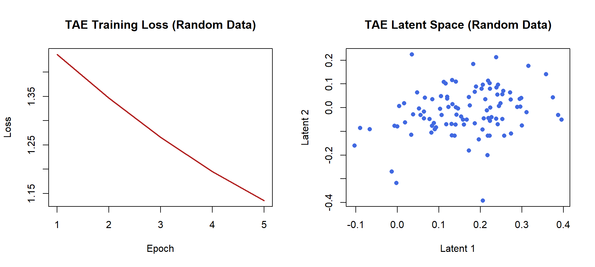
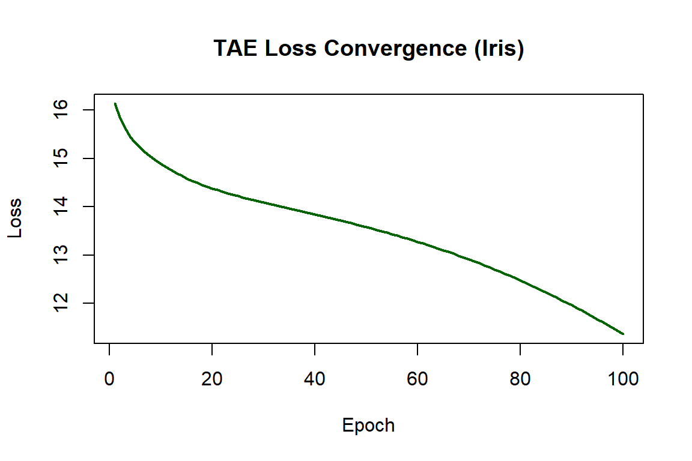
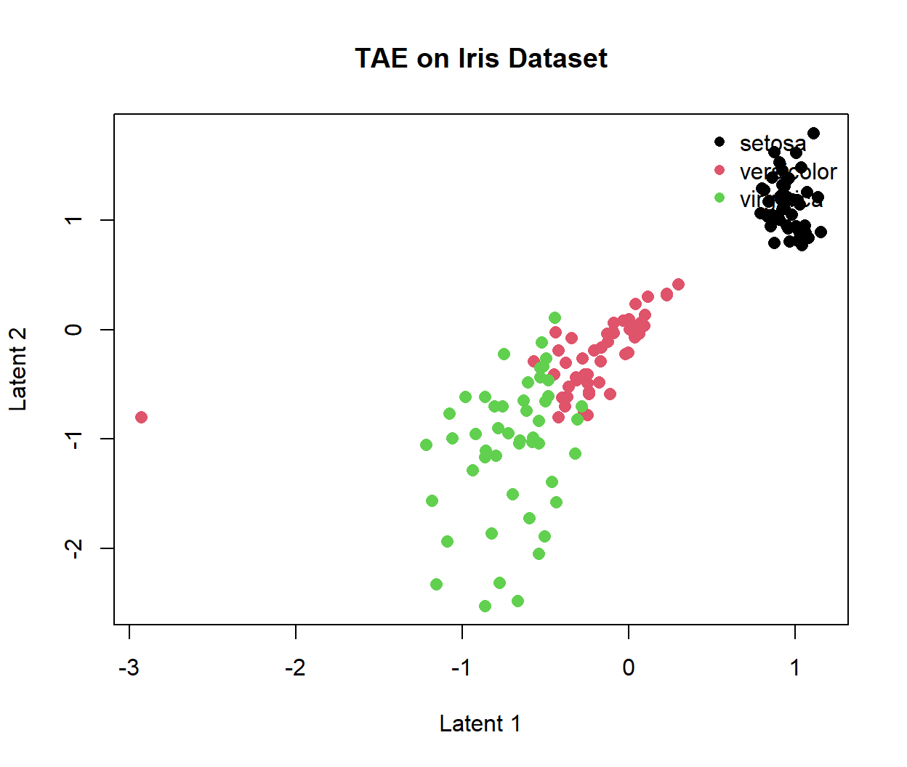

library(rtdae)Demo Script: Topological Autoencoder for R (rtdae)
1. Project Introduction
Standard autoencoders are efficient at data compression but often ruin the original topological shape of the data (such as loops, clusters, and cavities). Our R package, rtdae, uses a deep learning approach via PyTorch and GUDHI to reduce data dimensions while preserving its topological structures using persistent homology loss terms.
2. Environment Setup
The cross-language integration between R and Python is fully established. Upon loading the package, rtdae automatically binds to the dedicated virtual environment (r-rtdae-env) and manages deferred loading for Python backends (torch, gudhi, scipy).
3. High-Level User Workflow
The primary interface for standard R users is fit_tae(). The complexity of PyTorch tensor memory conversion and neural network training loops is abstracted away entirely.
3.1 Quick Verification (Synthetic Data)
We first verify the pipeline functionality using a synthetic numeric matrix:
set.seed(123)
# 1. Synthesize benchmark matrix (100 samples x 10 features)
test_mat <- matrix(rnorm(100 * 10), nrow = 100, ncol = 10)
# 2. Fit Topological Autoencoder (5 epochs)
res_mat <- fit_tae(test_mat, latent_dim = 2, epochs = 5)
# 3. Inspect low-dimensional representations
head(res_mat) Latent_1 Latent_2
[1,] -0.0000371635 -0.07884708
[2,] 0.1308207065 -0.06864802
[3,] 0.2525637448 0.05580466
[4,] 0.2227028906 -0.05586436
[5,] 0.1536013782 -0.03800657
[6,] 0.2118116319 0.035471013.2 Visualizing Loss and Latent Representations
We can extract the training loss history and latent coordinates directly from attributes attached to the result object.
par(mfrow = c(1, 2))
# Training Loss History
plot(attr(res_mat, "loss_history"), type = "l", col = "firebrick", lwd = 2,
xlab = "Epoch", ylab = "Loss", main = "TAE Training Loss (Random Data)")
# 2D Latent Representation
plot(res_mat[, 1], res_mat[, 2], col = "royalblue", pch = 16,
xlab = "Latent 1", ylab = "Latent 2", main = "TAE Latent Space (Random Data)")
par(mfrow = c(1, 1))4. Benchmark Case Study: Iris Dataset
To evaluate how rtdae preserves underlying manifold structures, we apply it to the classic Iris dataset (\(150 \times 4\)).
4.1 Training the Autoencoder
set.seed(42)
# Extract 4 numeric features
iris_mat <- as.matrix(iris[, 1:4])
# Train for 100 epochs to preserve global manifold topology
res_iris <- fit_tae(iris_mat, latent_dim = 2, epochs = 100)4.2 Training Loss Convergence
plot(attr(res_iris, "loss_history"), type = "l", col = "darkgreen", lwd = 2,
xlab = "Epoch", ylab = "Loss", main = "TAE Loss Convergence (Iris)")
4.3 Topological Clustering Visualization
The latent coordinates successfully isolate Setosa from Versicolor and Virginica while preserving continuous manifold properties.
plot(res_iris[, 1], res_iris[, 2],
col = as.numeric(iris$Species), pch = 16, cex = 1.2,
xlab = "Latent 1", ylab = "Latent 2",
main = "TAE on Iris Dataset")
legend("topright",
legend = levels(iris$Species),
col = 1:3, pch = 16, bty = "n")
5. Developer Evaluation Protocol
For package maintainers, rtdae maintains a two-stage evaluation protocol ensuring low-level stability across Python backends.
Stage 1: Isolated Python Module Verification
Validates structural correctness of underlying Python neural network modules in pure Python:
#| eval: false
import numpy as np
from inst.python.vanilla import VanillaAutoencoderModel
# Synthesize high-dimensional benchmark data
train_data = np.random.randn(100, 10).astype(np.float32)
# Instantiate topological model wrapper
model = VanillaAutoencoderModel(
autoencoder_model="MLPAutoencoder",
ae_kwargs={"arch": [10, 32, 32, 2]},
lam=1.0
)Stage 2: R-Python Interoperability Verification
Directly executes backend scripts through reticulate to verify cross-language memory buffers:
library(reticulate)
# Ensure virtual environment is ready
if (!virtualenv_exists("r-rtdae-env")) {
virtualenv_create("r-rtdae-env")
virtualenv_install("r-rtdae-env", packages = c("torch", "numpy", "scipy", "gudhi"))
}
use_virtualenv("r-rtdae-env", required = TRUE)
# Test raw python backend execution
py_path <- file.path(getwd(), "inst", "python")
source_python(file.path(py_path, "test_vanilla.py"))